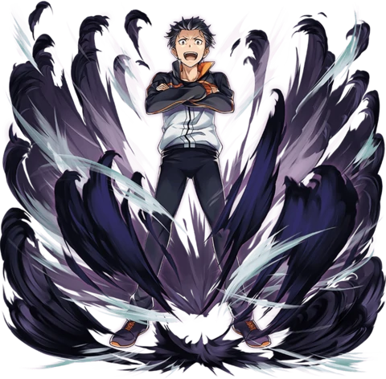

 Natsuki Subaru é o protagonista da série de light novels e anime Re:Zero − Starting Life in Another World (Re:Zero kara Hajimeru Isekai Seikatsu), escrita por Tappei Nagatsuki. Inicialmente um adolescente comum do Japão moderno, Subaru é subitamente transportado para um mundo de fantasia sem saber o motivo. Diferente de outros protagonistas de isekai, ele não recebe grandes poderes... exceto por uma habilidade única e misteriosa: a capacidade de voltar no tempo ao morrer, um dom que carrega um peso emocional devastador.
Historia
Origens no mundo real.
Chegada ao mundo de fantasia.
Primeiros encontros com Emilia e outros personagens.
Os ciclos de morte e retorno.
Desenvolvimento emocional ao longo da série.
Habilidade
Retorno pela Morte (Return by Death): sua principal habilidade, que permite reviver após a morte em um ponto de salvamento fixo.
Resistência mental (em constante evolução).
Estratégia e improvisação em combate e situações críticas.
Aprendizado com seus erros e mortes.
Caracteristicas
Teimoso, impulsivo e emocional.
Extremamente leal, especialmente a Emilia.
Corajoso, mesmo sem poderes físicos.
Desenvolve empatia profunda com o sofrimento dos outros.
Evolução de um garoto mimado para alguém mais maduro e consciente.
Curiosidade
O nome Subaru é uma referência à constelação das Plêiades.
Apesar de ser o protagonista, ele é um "anti-herói", pois frequentemente falha e sofre consequências pesadas.
Sua voz no anime é dublada por Yūsuke Kobayashi (em japonês).
O autor revelou que Subaru foi inspirado em personagens que enfrentam desafios emocionais intensos em vez de batalhas físicas.
Há teorias de fãs sobre a origem do "Retorno pela Morte" e sua conexão com a Bruxa da Inveja.